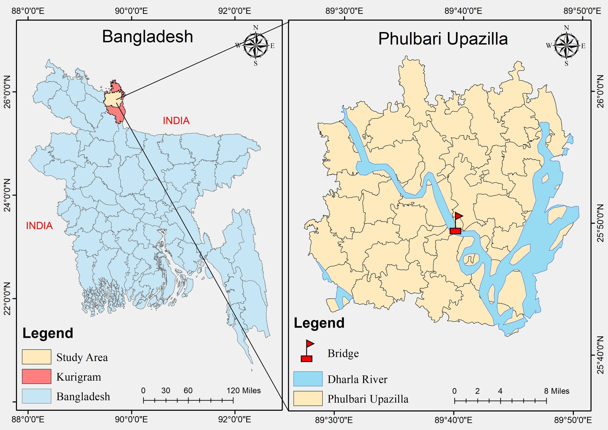
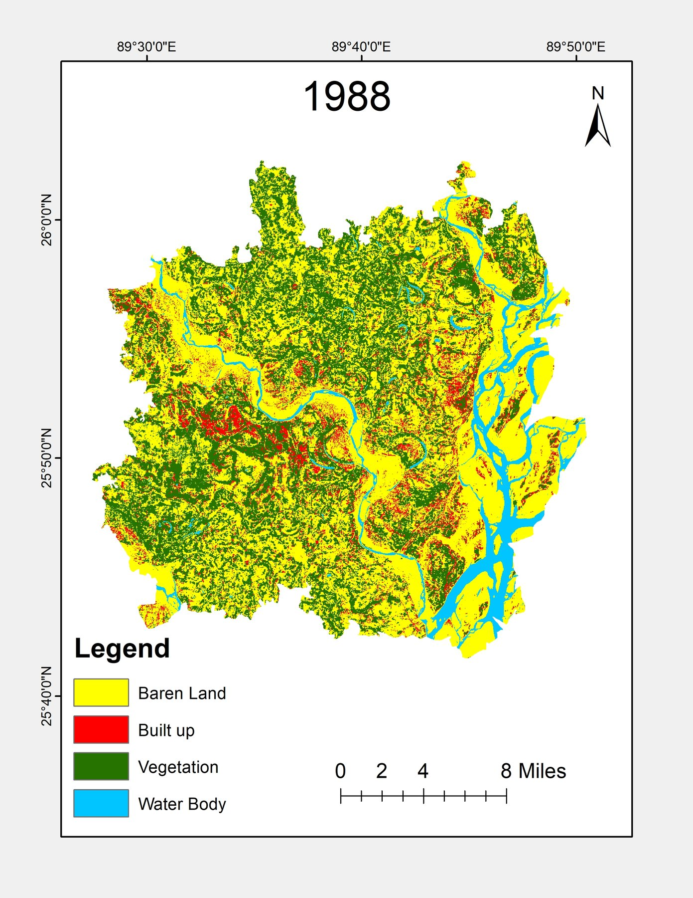

Acquire
Seven 30 m Landsat scenes spanning 1988–2017.
A multi-decadal remote sensing study anchored on the 2003 opening of Dharla Bridge in Kurigram, Bangladesh.
The Dharla is a transboundary river entering northern Bangladesh through Lalmonirhat and joining the Brahmaputra near Kurigram. Its mobile channel, seasonal water regime and intensively used floodplain form a landscape where infrastructure, river processes and land conversion intersect.
This case study uses the opening of Dharla Bridge in 2003 as a temporal anchor. Seven Landsat observations—three before the bridge and four from its opening onward—track land use and land cover, vegetation, surface water and land surface temperature. Scenario maps extend the LULC sequence to 2030 and 2040.
The 648-metre Dharla Bridge lies approximately three kilometres along the Kurigram–Nageshwari–Bhurungamari road. Construction began on 24 February 2000, and the bridge opened on 21 December 2003. Its 17 spans and 16 river piers create a fixed intervention across a highly dynamic channel.

Cloud-minimized Landsat 5 TM, Landsat 7 ETM+ and Landsat 8 OLI/TIRS scenes (path/row 138/42) were processed in a GIS environment. Four land-cover classes—Vegetation, Water Body, Barren Land and Built-up—were mapped through supervised maximum-likelihood classification. Thermal bands supported LST retrieval, while NDVI and NDWI represented vegetation condition and surface-water response.
Seven 30 m Landsat scenes spanning 1988–2017.
Four-class supervised LULC mapping and accuracy assessment.
LST, NDVI and NDWI surfaces for each observation year.
Pre-/post-2003 spatial patterns and pixel-sample correlations.
Land-cover scenario surfaces for 2030 and 2040.
Switch between mapped variables and years. LULC includes the two future scenarios; LST, NDVI and NDWI show the seven historical observations.

The classified endpoints show a pronounced reorganization of the mapped corridor. Built-up land increased from 7.73% in 1988 to 36.13% in 2017, while barren land declined from 53.59% to 15.33%. Vegetation occupied 43.28% in 2017, compared with 32.71% in 1988. Water remained a comparatively small and variable share of the mapped area.
The 2017 built-up share was approximately 4.7 times its 1988 share, based on classified endpoint percentages.
Barren land’s share fell by 38.26 percentage points between the two endpoints.
The scenario maps extend the spatial sequence beyond the observation period and reveal where land-cover transitions may concentrate if the modelled trajectory continues. They are presented as exploratory planning scenarios rather than deterministic forecasts. Percentage claims are intentionally withheld because the 2030 workbook contains conflicting summaries requiring reconciliation before manuscript submission.
Land Surface Temperature maps show marked year-to-year variation. Because scenes were acquired on different dates and include both January and April observations, the values are best interpreted as spatial snapshots rather than a uniform climate trend. The warmest mapped maximum occurs in 2013, the April observation.
After excluding NoData values, NDVI–LST correlations are negative in every mapped year (r = −0.11 to −0.29), consistent with a modest cooling association where vegetation is stronger. NDWI–LST correlations are negative in six of seven years and strongest in 2003 (r = −0.65); the 2013 relationship is weakly positive, reinforcing that acquisition timing and landscape conditions matter.
Overall classification accuracy ranges from 88% to 93%, with Kappa statistics between 83% and 91% across the seven historical maps. These results support temporal comparison while still requiring care around mixed pixels and class boundaries in a mobile river landscape.
Bridge approaches, channel margins and rapidly converting floodplain parcels need repeat observation rather than one-time mapping.
Vegetation and water surfaces provide measurable thermal value and should be integrated into corridor development and riverbank management.
Future LULC scenarios can identify candidate pressure zones, but should be recalibrated with newer imagery before use in statutory decisions.